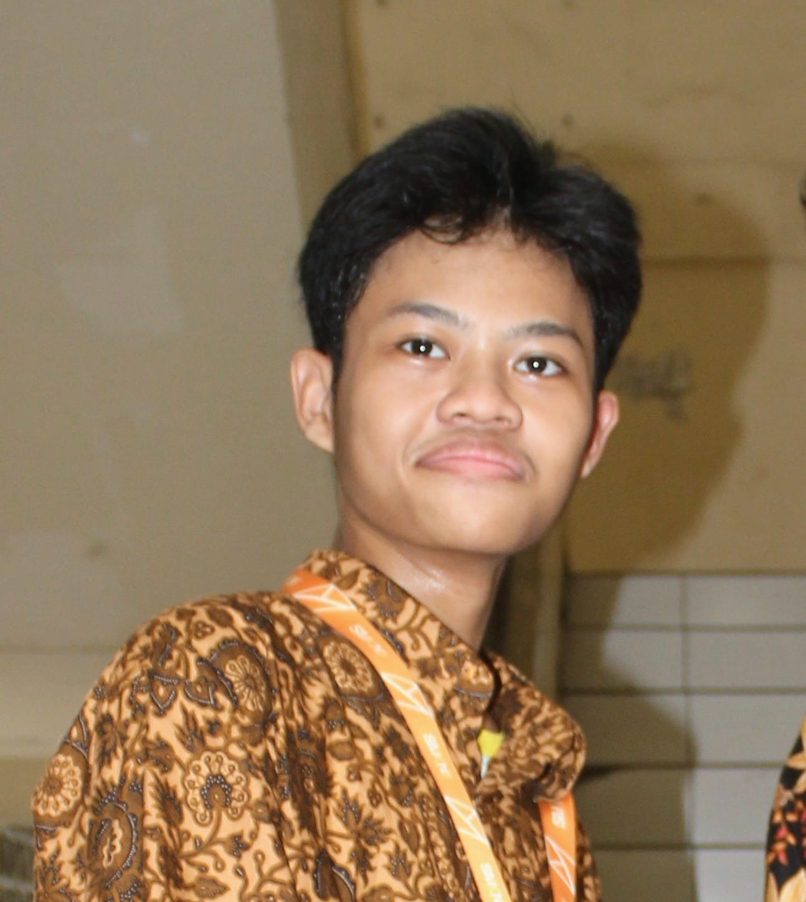
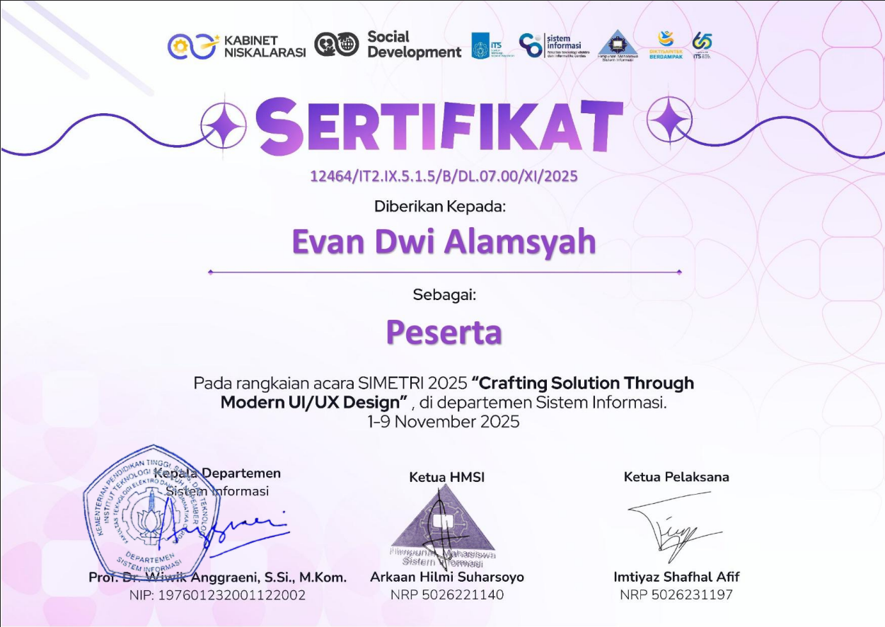
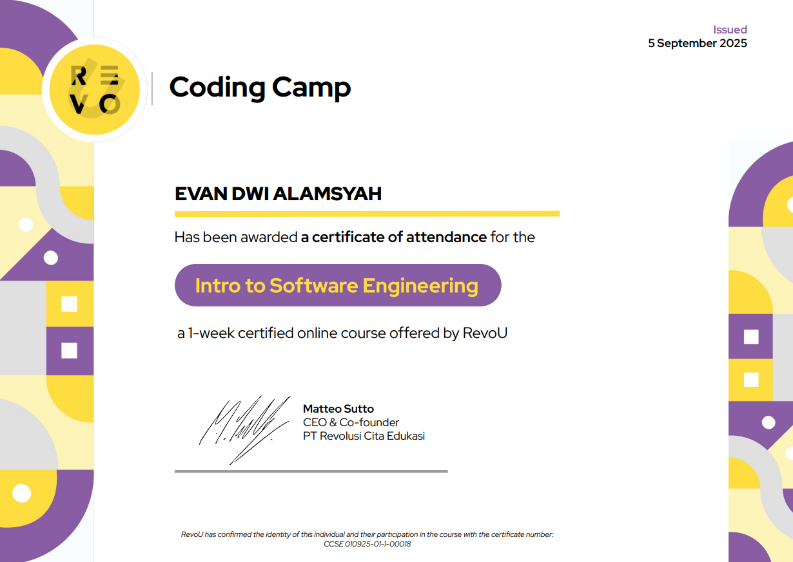
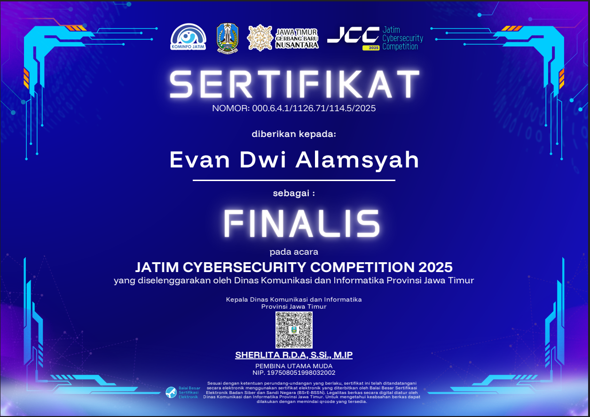
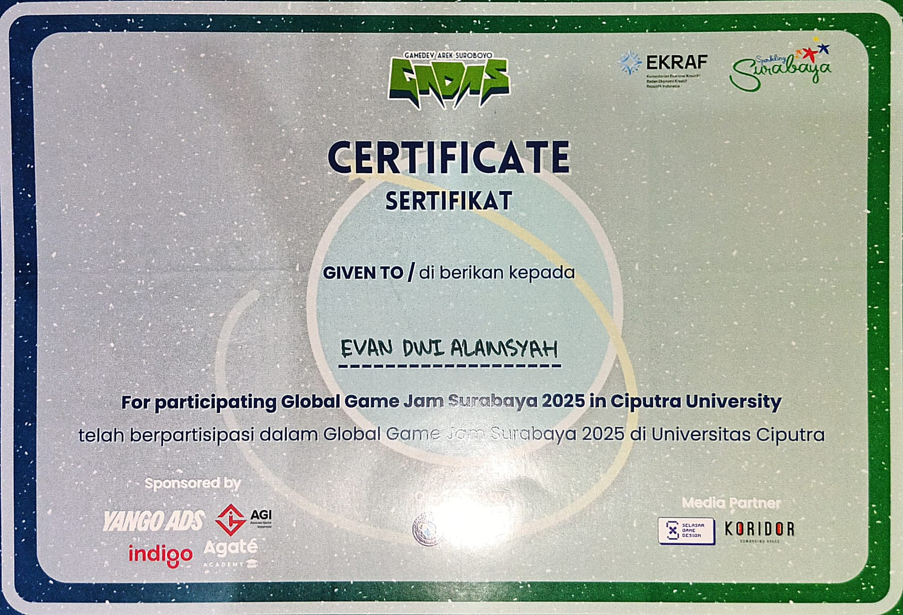

Halo, saya
Evan Dwi Alamsyah
Siswa Kelas XI Rekayasa Perangkat Lunak. Yang ingin belajar dan berkembang dalam dunia teknologi.
Siswa Kelas XI Rekayasa Perangkat Lunak. Yang ingin belajar dan berkembang dalam dunia teknologi.
Saya adalah siswa jurusan Rekayasa Perangkat Lunak (RPL) yang melek terhadap pengembangan teknologi. Saya terbiasa mendesain dan membangun aplikasi web dari tahap perancangan antarmuka hingga implementasi logika backend.
Spesialisasi saya berada pada ekosistem web modern, khususnya dalam pemanfaatan framework PHP seperti Laravel, dan pembuatan antarmuka responsif menggunakan Tailwind CSS. Selain web, saya juga memiliki ketertarikan terhadap desain UI/UX dan pengembangan frontend.

Beberapa studi kasus nyata yang menguji kemampuan arsitektur database, styling, dan desain saya.

Sistem manajemen dan penjualan produk untuk UMKM Bakso MasRoy. Dilengkapi dengan Sign up / sign in, fitur Pemesanan, Pembuatan, Pengeditan, Penghapusan produk, Manajemen stok serta mekanisme Pemberian ulasan.

Proyek pengabsenan acara kelas. Menggunakan Laravel dan Tailwind CSS, dengan dilengkapi sistem Log in / Sign up, Pembuatan, Pengeditan, Melihat dan Penghapusan serta pemilihan data secara real-time.

Merancang ulang antarmuka mobile untuk landing page platform streaming. Berfokus pada implementasi dark theme yang pekat dan penataan struktur grid.
Keahlian formal dan pencapaian teknis.

Peserta - Pelatihan UI/UX Design selama 1 Minggu

Peserta - Pelatihan UI/UX Design selama 1 Minggu

Finalis - Lomba CyberSecurity

Peserta - Pelatihan Pembuatan Game selama 3 Hari